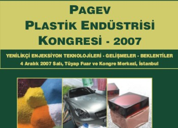

04 Aralýk 2007 > PAGEV Plastik Endüstrisi Kongresi - 2007 >
Yenilikçi Enjeksiyon Teknolojileri - Geliþmeler - Beklentiler:
Yer: TÜYAP, Fuar ve Kongre Merkezi - Beylikdüzü Ýstanbul
(Akademisyen ve öðrenciler için ücretsizdir)
Bu kongre, PAGEV (Türk Plastik Sanayicileri Araþtýrma, Geliþtirme ve Eðitim Vakfý) tarafýndan, Plast Eurasia Ýstanbul 2007 17. Uluslarararasý Ýstanbul Plastik Endüstrisi Fuarý'ndan bir gün önce, imalat sanayimizin en genç ve en hýzlý büyüyen plastik sanayi faaliyetlerini tüm yönleri ile geliþtirmek, firmalarýmýzý dünya plastik teknolojisindeki en son geliþmeler hakkýnda bilgilendirmek, daha yüksek katma deðer oluþturan mamul üretimi saðlayarak sektörümüzün global pazarlarda rekabetçi üretim olanaklarýný arttýrmak amacýyla düzenlenmektedir.
Kongre Programý:
- 09:00 - 09:30 Kayýt
- 09:30 - 09:35 Açýlýþ Konuþmasý - Selçuk Aksoy, PAGEV
- 09:35 - 09:45 Plastik Meslek Standartlan ve Akreditasyon - Prof. Dr. Tekin Arda, PAGEV
- 09:45 - 10:10 Orta ve Doðu Avrupa Ülkelerinde Enjeksiyon Kalýpçýlýðýnýn Mevcut Durumu (Status of Injection Molding in the Central- and Eastern European region) - Kalman Vappel, ECEBD
- 10:10 - 10:35 Enjeksiyon Teknolojisinde Yeni Poliolefin Ürünler - Selçuk Ertekin, Basell Polyolefýns Ýstanbul Tic.Ltd. Þti.
- 10:35 - 11:00 PBT Kompoundlarý ve Alaþýmlarýnýn Saðladýðý Avantajlar, Murat Cansever, Eurotec Mühendislik Plastikleri
- 11:00 - 11:15 Ara
- 11:15 - 11:40 Ýnce Cidarlý Gýda Kaplarýnýn Enjeksiyon Kalýplamasýndaki Ýlerlemeler (Advances in Injection Molding of Thin Wall Food Containers) - Paulo Gomes, HUSKY Injection Molding Systems
- 11:40 - 12:05 Multi-Enjeksiyon Teknolojîlerindekî Son Geliþmeler - Dudu Coþgun, BILLION
- 12:05 - 12:30 Enjeksiyon, Kalýp Dünyasýndaki Geliþmeler ve Geleceðin Makinesi, Metin Bilgili, BEKO
- 12:30 - 13:45 Öðle Yemeði
- 13:45 - 14:10 Enjeksiyon Kalýplama Teknolojilerinde ve Makine Tasanmýnda Son Trendler - Engin Sokullu, TEKNOINTEL
- 14:10-14:35 Atýlabilen Ambalaj Çözümleri Ýçin Enjeksiyon Kalýplama (Injection Molding Technologies For Disposable Packaging Solutions) - Emiddio Siani, SANDRETTO
- 14:35-15:00 Hýzlý PrototiplemeTeknolojileri (Rapid Prototyping Technologies) - Prof. Dr. Bilgin Kaftanoðlu, ODTÜ
- 15:00 - 15:15 Ara
- 15:15-15:40 Toz enjeksiyon kalýplama yöntemîyle metal ve seramik malzemelerden parça üretimi - Yrd.Doç.Dr. Çetin Karataþ, Gazi Üniversitesi
- 15:40 - 16:05 Dassault Systemes Çözümleri; Daha Verimli Plastik Kalýbý Tasarýmý ve Ýmalatý - Aydýn Çýkýn / Ayhan Çýkýn, GRUP OTOMASYON
11615-11F30 Tersine Mühendislik ve Kalite Kontrol'de Son Teknolojiler - Deniz Özdemir, infoTRON
- 16:30 - 16:45 Ara
- 16:45 - 17:45 * Enerji tasarrufu Saðlayan Projeler Freeflow, Recipe, and Peptflow (Energy saving projects, Freeflow, Recipe, and Peptflow) - John Colbert, RAPRA
* Extruderlerde enerji tasarrufu saðlama ve verimliliði arttýrma amacýný taþýyan Freeflow ve Peptflow Projeleri, PAGEV'in de dahil olduðu AB 6. Çerçeve Programý kapsamýnda yürütülmektedir.
Daha fazla bilgi ve kayýt için: www.pagev.org.tr/contents.asp?a=301&b=7
E-Posta: sultan.akyasan@pagev.org.tr
21
- 23 Haziran 2007 > 4. Uluslararasý Kalýp ve Model Tasarýmý
ve Üretimi Konferansý ve Sergisi:
Yer: Altýn Yunus Oteli, Çeþme Ýzmir

Ýlki
1997 yýlý Haziran ayýnda Ýstanbul'da gerçekleþtirilen Uluslararasý
Kalýp ve Model Tasarýmý ve Üretimi Konferansý'nýn ikincisi
21-23 Haziran 2001 tarihleri arasýnda Kuþadasý'nda yapýldý.
Üçüncü konferans ise 17-19 Haziran 2004 tarihlerinde Bursa'da
düzenlendi. Bu konferans ile birlikte Japonlar tarafýndan
düzenlenen Yedinci Uluslararasý Aþýndýrma Teknolojilerindeki
Geliþmeler Sempozyumunu da gerçekleþtirildi. Bu konfreranslarýmýzda,
ulusal ve uluslararasý katýlýmcýlarýn yer aldýðý sergiler
de düzenlenmiþtir...
Uluslararasý
Ýmalat Mühendisliði Araþtýrmalarý Akademisi (CIRP), Makina
Tasarým ve Ýmalat Derneði (MATÝM) ve ODTÜ tarafýndan ortaklaþa
gerçekleþtirilen konferans ile, deðiþik ülkelerden, dallarýnda
uzmanlar, üniversite ve endüstri, kalýp ve model tasarým ve
imalatýndaki deneyimlerini aktarmalarý için bir araya getiriliyor.
Konferans, tasarým yöntemleri, takým tasarýmlarý, makina teknikleri,
üretim, ölçüm sistemleri ve CAD/CAM/Robotik uygulamalarý hakkýnda
bir tartýþma platformu oluþturmayý amaçlýyor.
Konferansta
yer alacak baþlýklar:
Bilgisayar
Destekli Tasarým Yöntemleri, Bilgisayar Destekli Ölçüm ve
Kalite Kontrol Sistemleri, Kalýp ve Model Ýþlenmesinde CNC
Sistemleri, Sayýsallaþtýrma ve Modelleme, Kalýp/Model Tasarýmýnda
Üretim Aþamalarýnýn Simülasyonu, Kalýba Döküm ile Þekil Verme,
Metal Þekillendirme, Yeni Ürünler, Perdahlama/Polisaj Teknikleri.
Sert Malzemelerin Ýþlenmesi, Kalýp/Modellerin Yüksek Hýzda
Frezelenmesi, Kalýp/Modellerin Elektro Erozyon ile Ýþlenmesi
ve diðer ilgili konular...
Konferanslarda
çok sayýda yerli ve yabancý katýlýmcý yer almaktadýr. Konferansa
katýlmak, bildiri sunmak, sergide yer almak ve þirket tanýtýmýný
sunmak ve bilgi almak için aþaðýdaki web sitesini kullanabilirsiniz:
www.diemold.org
Kayýtlar
ve her türlü iþlem web-sitemizdeki baþvuru formu aracýlýðý
ile "online" olarak yapýlmaktadýr. Baþvurular için
gereken tarihler bu sitede belirtilmiþtir. Kongrede sunulan
bildiriler bir kitap ve CD olarak katýlýmcýlara verilecektir.
Ýrtibat:
Prof.
Dr. Bilgin Kaftanoðlu
Kongre Baþkaný
www.diemold.org
info@diemold.org
Makina
Mühendisliði Bölümü
Orta Doðu Teknik Üniversitesi
06531 Ankara
Tel: (312) 210 25 74
Not: TurkCADCAM.net, bu etkinliðin tanýtým sponsorlarýndandýr.
25 - 26 Mayýs 2007 > X. Otomotiv ve Yan Sanayii Sempozumu:
Yer: Tüyap Bursa Uluslararasý Fuar ve Kongre Merkezi
Sunulacak bildiriler okunma, tartýþýlma ve deðerlendirilmesi biçiminde gerçekleþtirilecek, gerektiðinde açýk oturum, panel ve benzerlerine de yer verilecektir.
AMAÇ:
Son yýllarda otomotiv sektöründe teknolojik yatýrýmlarýn artmasý ve ürün geliþtirme süreçlerindeki geliþmeler, ülkemizin üretim merkezi olmasýný saðlamýþ; ekonomik ve dýþ ticaret açýsýndan ihracatta da önemli bir ülke konumuna getirmiþtir.
Türkiye, üretim merkezi olarak Batý Avrupa'ya karþý göreceli üstünlükleri olmasýna karþýn; Doðu Avrupa ve Uzakdoðu ülkelerinin hammadde, enerji ve iþgücü maliyeti açýsýndan Türkiye'ye karþý üstünlüðü, gelecekte üretim merkezi olma özelliðini tehdit etmektedir. Türkiye, halen bulundurduðu maliyet üstünlüðünü, Doðu Avrupa ve Uzakdoðu ülkelerine karþý korumak için farklý alanlarda da geliþmeye mecburdur. Mevcut sektör içinde Türkiye'nin mühendislik, Ar-Ge ve tasarým gücünü geliþtirmekten baþka seçeneði görülmemektedir. Bu gücünü tasarým merkezlerinin olduðu yerlere doðru kaybetmesi durumunda ise üretim merkezi olma iþlevini de yitirebilecektir.
Bu Sempozyumda, geliþen rekabet koþullarý altýnda, ülkemiz otomotiv sanayiinin üretim merkezi boyutundan, üretim ve tasarým merkezi boyutuna, sektörde dünya düzeyinde söz sahibi olmanýn stratejilerini tartýþmak; devlet tarafýndan verilen Ar-Ge teþviklerinin etkin ve verimli kullanýlmasýný saðlanmasý hedeflenmektedir.
BÝLDÝRÝ KONULARI:
- Dünya Otomotiv Sanayiinin Dünü, Bugünü, Yarýný
- Otomotiv Sanayiinin Türk Ekonomisindeki Yeri ve
Geleceði (Ticari Dengeler)
- Ulusal Otomotiv Sektör Girdilerinin Analizi
- Ulusal Ana ve Yan Sanayii Durum Analizi
- Ar-Ge Politikalarý / Tasarým / Teþvikler
- Ana Sanayiinde Ar-Ge, Yan Sanayiinde Ar-Ge
- Ar-Ge Ýçin Teþvik Uygulamalarý
- Üniversite - Sanayii Ýþbirliði / Teknoparklar
- Eðitim-Eðitimde Tasarýmýn Önemi,
- Otomotiv Sanayiinde Teknolojik Geliþmeler
- Malzeme Teknolojisindeki Geliþmeler
- Yanma ve Yakýt Teknolojisindeki Geliþmeler
- Yenilikler, Buluþlar.
- Kalýp Tasarýmý ve Mühendislik Uygulamalarý
Daha fazla bilgi için:
http://otomotiv.mmo.org.tr
Sempozyum Çaðrý Bildirisi > X.Otomotiv-Sempozyumu-Cagri-Bildirisi.pdf (292KB)
tmmob Makina Müh. Odasý Bursa Þubesi
Elmasbahçeler Mah. Sabunevi Sok . Mühendisler Ýþhaný No:19/1
Osmangazi / Bursa
Tel: (224) 444 8 666
Faks: (224) 252 11 94
otomotiv@mmo.org.tr
18 - 19 Mayýs 2007 > MARKATEK 2007,
Marka, Kalite ve Teknoloji Yönetimi Sempozyumu:
Yer: GTO Konferans Salonu, Gaziantep
Günümüzde, iþletmelerin düþük maliyet ya da ucuz iþçilik gibi geleneksel stratejiler kullanarak rakipleri ile rekabet etme þansý kalmamýþtýr. Bu durum; MARKA, KALÝTE ve TEKNOLOJÝ odaklý rekabet stratejilerinin geliþtirilerek kullanýlmasýný kaçýnýlmaz kýlmaktadýr.
Sürdürülebilir bir ekonomik kalkýnma için; tasarým yeteneklerinin artýrýlmasý, yeni ürün ve teknolojiler geliþtirilmesi iþletmeler açýsýndan adeta bir zorunluluk haline gelmiþtir. Artýk, marka olmanýn ya da marka sahibi olmanýn önemini kavrayan ve de markalaþmaya çalýþan iþletmelerin sayýsý her geçen gün giderek artmaktadýr. Kaliteli bir ürün veya hizmet ile bütünleþen bir "marka"; iþletmelerin sahip olabileceði en deðerli varlýklardan birisi haline gelmiþtir. Bu yönüyle, "markalaþma" kalite kavramý ile özdeþleþtirilebilecek ya da "kalite" ile birlikte irdelenmesi gereken bir konudur.
Kuþkusuz, kalite bilincinin artýrýlmasý, markalaþma süreçlerinin hýz ve kalitesini artýracak ve markalaþmayý olabildiðince kolaylaþtýracaktýr. Rekabetçi pazarlarda yer bulabilmek ve üstünlük saðlayabilmek için, iþletmelerin ve tüketicilerin yaþam kalitelerini artýracak þekilde "markalarýn etkin bir biçimde yönetilmesi" büyük bir önem kazanmýþtýr. MARKA, KALÝTE ve TEKNOLOJÝ, etkin bir rekabet yönetiminin en önemli kavram ve araçlarýdýr. Sürdürülebilir bir kalkýnma modeli oluþturabilmek ve rekabet etme yeteneklerini artýrabilmek için etkin marka, kalite ve teknoloji süreçleri tasarlanmasý ve bu süreçlerin etkili bir þekilde iþletilmesi gerektiði açýkça ortadadýr. Üstelik tüm bu süreçler, hem birbirleriyle hem de üretim ve servis sistemleri süreçleri ile etkileþim içindedir.
Mühendislik disiplininin geliþen bu akýmlarýn dýþýnda kalmasý düþünülemez. Toplumun her kesimi gibi, endüstriyel kuruluþlarýmýzý da yakýndan ilgilendiren ve giderek "stratejik hale gelen" bu konularda ülkemizde yeterli altyapý bulunmadýðý, birbirleri ile yakýndan ilgisi olmasýna raðmen üç konunun bir arada ele alýnmadýðý, tüm taraflarýn katýldýðý platformlarda tartýþýlmadýðý ve kamuoyu ile yeteri düzeyde paylaþýl(a)madýðý gözlemlenmektedir.
MARKATEK-2007, bu konudaki boþluðu doldurmak adýna bir "baþlangýç olmak" hedefi ile düzenlenmiþtir. MARKA, KALÝTE ve TEKNOLOJÝ YÖNETÝMÝ ile ilgili konularý tüm boyutlarýyla mercek altýna almak ve tüm ilgili taraflara ýþýk tutacak güçlü fikir ve paylaþýmlarýn ortaya çýkarýlmasýný saðlamak amaçlarýyla yola çýkan MARKATEK-2007 yenilikçiliðin ve rekabetçiliðin nasýl artýrýlabileceðini ve "geleceði" tartýþmak için mükemmel bir ortam ve fýrsat sunacaktýr.
Sanayide, kendi iþletmesinde ve üniversitelerde çalýþan konuya duyarlý herkesi, Marka, Kalite ve Teknoloji Yönetimi ile ilgili araþtýrma, uygulama ve gelecekteki geliþmeleri ortaya koyan bildirilerini sunmaya ve elbette bilgilerini paylaþmaya davet ediyoruz.
Daha fazla bilgi için;
http://gaziantep.mmo.org.tr/markatek
|